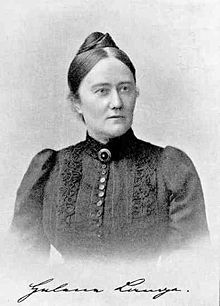

12. Schlusslektüre, «AgF», S. 207-268 (45')
Textverständnis «Aus guter Familie»
Wenn Sie die Seiten 207-268 gelesen haben, dann wissen Sie, dass Agathe nach verschiedene Möglichkeiten sucht, um ein erfülltes Leben zu führen. Wie sehen ihre Versuche aus? Beurteilen Sie die Handlungen danach, ob sie gelingende Strategien sind oder nicht.
Karte auswählen, dann Kategorie anklicken.
Versuch gelingt
Versuch misslingt
Was verspricht Agathe der sterbenden Mutter? Sie verspricht,
«Unzählige Male musste Agathe ihr versprechen, für den Papa zu sorgen, dass er alles genau so bekäme, wie er es gewohnt sei, immer bei ihm zu bleiben, ihn zu pflegen und lieb zu haben.» (AgF, S. 223)
Agathe wurde zum Muttersein erzogen. Diese Erziehung verfehlt ihr Ziel, nicht weil sie sich dagegen wehrt, sondern weil sie keinen Mann findet und deshalb keine Familie gründen kann. Die Suche nach einem anderen Platz in der Gesellschaft scheitert und führt dazu, dass sie in eine Klinik eingwiesen wird.

Helene Lange, Foto: Atelier Elvira, vor 1899.
Helene Lange, die bürgerliche Frauenrechtlerin und Reuters Zeitgenossin, kommentiert 1896 den Roman «Aus guter Familie» und kommt nach ihrer Lektüre zum Schluss, dass Agathe unter der damals weit verbreiteten Gemütskrankheit des Nichtstuns leidet:
Der erste Gedanke bei dieser Lektüre ist: das ist hässlich - der zweite: aber wahr, wahr, schauerlich wahr, diese ganze innerlich verkommene Existenz eines Mädchen der «guten Gesellschaft». Können schöne, heitere Blüten aus dem Sumpf erwachsen? Und ist der opulente Müssiggang mit dem einen verborgenen und doch offenbaren Gedankenziel, zu dem der «gute Ton» unsere ewigen «jungen Mädchen» verurteilt, bis es zur fixen Idee, zur Gemütskrankheit wird, etwas andres? Mögen Einzelheiten – wie z.B. die Aufzeichnungen in Agathes Tagebuch –unpsychologisch und übertrieben sein – vom Ganzen lässt sich das leider nicht behaupten. Und so müssen wir das Hässliche ertragen, um der Wahrheit ins Gesicht zu sehen. – Und die Hilfe gegen solch inneres Verkommen? Pflichten, Verantwortung, geistige und körperliche Arbeit, Fortentwicklung, ein lebenswertes Leben statt des leeren Tändelns – alles das, was man den jungen Mädchen vorenthält. Das ist das ernste Motto, das unsichtbar auf dem gelben Umschlag des Buches steht. Entwicklung! «Etwas Werdendes, das braucht der Mensch, und das braucht darum auch die Frau.» – Der Verfasserin haben wir für ihren Mut zu danken.
Helene Lange: Bücherschau. Aus guter Familie. In: Die Frau. Monatsschrift für das gesamte Frauenleben unserer Zeit, Jg. 3 (1895/95), H 5 (Februar 1896), S. 317.
Emanzipation als Ausweg?
Bevor Agathe psychisch zusammenbricht, ermuntert Martin sie, sich von ihrem Vater zu lösen, ein unabhängiges Leben in Zürich zu führen und sich politisch für die Rechte der Frauen zu engagieren.
«Der alte Mann wird Dich stets an allem hindern, womit Du Dir helfen willst. Wenn er seinen Bücherschrank vor Dir abschliesst, und wenn er Dir das Leben abschliesst. Du musst Dich von ihm frei machen! Geh' von ihm fort und suche Dir Arbeit und Freude, die Dich befriedigt.» «O Martin! Das ist ganz unmöglich.» «Ja - Du fühlst Dich doch unglücklich bei ihm. [...] Gut - so ändere es.» «Aber lieber Martin, sei doch nur vernünftig. Wie soll ich denn plötzlich meinen Vater allein lassen - ohne Geld und ohne Kenntnisse in die weite Welt hineinlaufen? Er braucht mich. Wer soll ihn erheitern und pflegen? Da draussen in der Fremde da braucht mich niemand.» (AgF, S. 240f.)
Martin Greffinger ermuntert Agathe, sich zu emanzipieren:
«Sag' Deinen lieben Mitschwestern nur ehrlich und deutlich, wie ihr Leben in Wahrheit beschaffen ist. Vielleicht bekommen sie dann Mut, es selbst in die Hand zunehmen, statt sich von ihren Eltern und der Gesellschaft vorschreiben zu lassen, wie sie leben sollen, und dabei kranke, traurige, hysterische Frauenzimmer zu werden, die man mit dreissig Jahren am liebsten alle miteinander totschlüge! - Na - lockt Dich das nicht? mitzuarbeiten für das Recht der Persönlichkeit? - Komm, stoss an - es lebe die Freiheit!» (AgF, S. 250)
Reflexion
Halten Sie Ihre Überlegungen im Lesejournal fest.
Ein junges Mädchen hatte den Verstand verloren
Weshalb greift Agathe Eugenie an und versucht sie zu würgen? (AgF, S. 266) Lesen Sie die Zitate und beantworten Sie im Anschluss die Reflexionsfragen.

'Kranke haben keinen Willen,' sagte Eugenie energisch und packte die Koffer.
AgF, S. 258

Nur alles über sich ergehen lassen ---- Sich mit aller Gewalt zusammennehmen - ruhig sein - keine Scenen mehr machen! Dann muss der Doktor sie doch für gesund erklären.
AgF, S. 260

Fast alle waren sie [die Frauen] jung, auf der Sommerhöhe des Lebens. Und sie teilten sich in zwei ungefähr gleiche Teile: Die von den Anforderungen des Gatten, von den Pflichten der Geselligkeit und den Geburten der Kinder erschöpften Ehefrauen und die bleichen, vom Nichtsthun, von Sehnsucht und Enttäuschung verzehrten Mädchen.
AgF, S. 261

Wie [Agathe Eugenie] hasste - die mit so einer kalten Gewalt alles an sich zog...
AgF, S. 265

Agathe hatte ihre Schwägerin zu Boden geworfen, kniete auf ihr und suchte sie zu würgen. Sie lachte, sie schrie und stiess irre Worte aus. Mit brutaler Gewalt musste die Tobende gehalten - der zarte Mädchenkörper gebändigt und gefesselt werden. [...] Ein junges Mädchen hatte den Verstand verloren - es war nichts gar so Seltenes in dem Badeort.
AgF, S. 266

- Nein - man wusste keinen Grund - absolut keinen!
AgF, S. 267
Schlussreflexion
Stellen Sie Vermutungen an. Halten Sie Ihre Überlegungen in Ihrem Lesejournal fest.